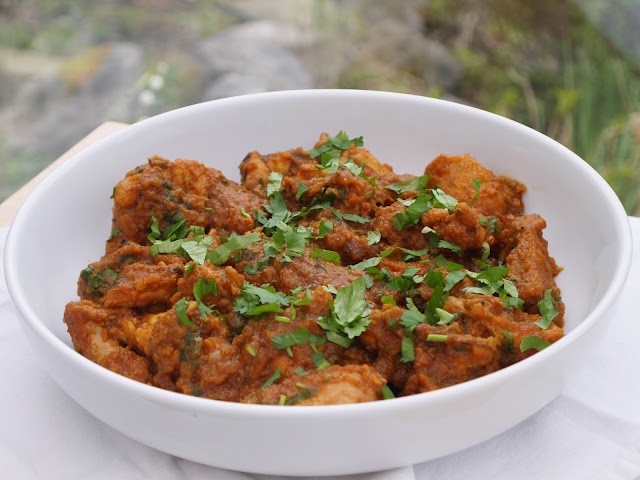

Chicken Masala Recipe

Description of Chicken Masala
An authentic Pakistani chicken curry has been on my recipe request list for ages and I've finally gotten round to it.
Ingredients:
- Vegetable Oil
- Onions
- Tomatoes
- Ginger Paste
- Garlic Paste
- Salt
- Crushed Red Chilli Flakes
- Ground Coriander
- Curry Powder
- Ground Cumin
- Ground Turmeric
- Tomato Puree
- Whole Chicken Pieces
- Fresh Coriander
- Garam Masala
Steps:
- Heat the oil in a large pan with a lid. Once the oil is hot, over a medium heat, add the diced onions. The smaller you cut them, the quicker they will cook. Stir-fry the onions until they are golden brown - this should take about 10 minutes.
- Next, blend the tomatoes. Whilst the onions are browning, blend the tomatoes with a little water until smooth. These blended tomatoes will be added to the curry in stages
- Once the onions are ready, add a splash of the tomatoes and stir. Once bubbling and well combined, it's time for the spices.
- Time for the spices! Add in the ginger paste, garlic paste, salt, red chilli, ground coriander, curry powder, ground cumin and ground turmeric. Give them a good stir until fragrant - over a medium heat.
- Getting the masala right! Add another splash of tomatoes and stir in. Then, add in the tomato puree along with more vegetable oil, if things are starting to stick. Stir-fry until the oil rises then add another splash of tomatoes.
Stir in and stir-fry again until the oil rises. At this point, you could also blend the masala so that it's smooth before adding in the chicken.
- Chicken time! With the heat on medium, add in the chicken pieces. Stir-fry the chicken again until it is sealed and no longer pink. Then, add in the last bit of the tomatoes. Stir in until combined and bubbling.
- Thickening the masala! Pour in a splash of water and stir in. Stir-fry until the water has dried out, the masala has thickened and the oil has risen.
- Simmer time! Add as much water as you like at this point -the more water you add, the saucier the curry. Stir in and bring to the boil. Cover and simmer on low for 30 minutes - giving it a stir halfway.
- Finishing off! Uncover the curry and give it a stir. Check to see if the chicken is fully cooked. If not, let it simmer for a little longer. Then, let the curry bubble and add another splash of water, if needed.
Stir in, boil, let the oil rise and we're done! Stir in the fresh coriander and garam masala. Cover on a low heat for a final 5 minutes.
- Serve! This curry is delicious with anything - boiled rice, roti, naan, bread or pulao rice. Enjoy!
Odin recipe